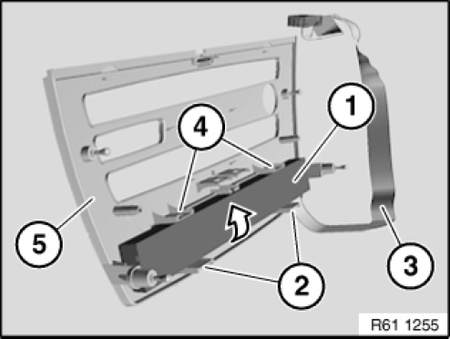

61 31 054 Removing and Installing/Replacing Centre Console Control Panel (With CCC/ASK, CIC)
61 31 054 Removing And Installing (Or Replacing Version With CCC) Centre Console Control Panel (After 03/2007)

Necessary preliminary tasks:
- Remove middle cover for the dashboard

NOTE: Ribbon cable (3) of centre console switch cluster (1) leads to heater/air conditioner control panel.
Unclip centre console switch cluster (1) from lower retaining points (2) and upper retaining points (4) and remove in direction of arrow from centre dashboard trim (5).
Installation note:
Make sure centre console switch cluster (1) engages correctly in upper fastening points (4) and lower fastening points (2).
Make sure ribbon cable (3) is correctly routed.
Replacement:
Assign buttons according to vehicle equipment.